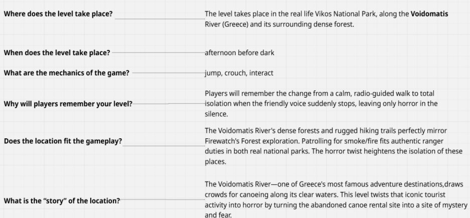

Summary
Inspired by Firewatch, you are tasked with keeping the area safe from fires and any other dangers that might arise. What begins as an afternoon adventure soon takes a wrong turn… This level places strong emphasis on narrative, much like Firewatch. The player is not only guided through the environment but also receives context about the area and its story. It is designed as a tutorial that introduces basic mechanics such as jumping, crouching, and interacting while establishing the mood for the rest of the game.
In designing the level, I aimed to showcase some level design techniques and to connect the fiction with the mechanics, creating a more believable and cohesive experience.
Narrative Context
In pre-production I always start by asking questions to define the level characteristics.
References and Inspirations
- My main inspiration came from my home country Greece and its vastly unexplored environments. I wanted to showcase real life locations to achieve realism.
Mechanics / Design Goals
Mechanics:
- Jump
- Crouch
- Interact
Design Goals:
- Emotional Pacing : Calm → Curiosity → Tension → Isolation.
- Narrative-Driven Guidance : In this level, beyond providing guiding methods like leading lines, logs and trees, I also aimed to direct the player through the voice on the radio. The voice not only guides but also warns the player as they explore, something I found particularly interesting to design and integrate.
- Intended Experience : Narrative plays a key role in shaping the world and the emotions the player experiences throughout the level. It begins with a calm atmosphere and a pleasant conversation, gradually becoming more mysterious as the story unfolds.
Top Down Layout
Level Walkthrough
Beat 1 (Safety)
- The player is informed through the radio to go look for a potential fire. (Objective/Goal Started)
- From the watchtower, the player can see the whole playable area. (Vista)
- Via narrative guidance from the radio, he takes the shortcut to his goal. (Player Guidance)
- The radio voice foreshadows the jump, preparing the player to take it. (Teach Mechanic/Tutorial) The experience isn't punishing if the player fails the jump, they can simply try again. (Safety Net)
- After the jump, player is forced to move ahead. (One-way valve)
Beat 2 (Curiosity & Rising Tension)
- The player now visually spots the objective (smoke) and progresses into the Forest gameplay section. (Sees smoke, tension rising)
- Spotting a locked gate, the player must find the key. He is told it's at the old canoe rental building. (Player Engagement)
- He now sees the building and, with a visual indication (light flicker), is drawn there to investigate. (Attract the player's attention/Frame the area)
- The player discovers that the building has been breached. (Unease)
- He must climb the trashcans to the roof and enter the open hatch to reach the key. (Affordances)(Previous framing highlighted the trashcans as climbable for traversal.)
- The player arrives at the gate and unlocks it. (Backtrack)
Beat 3 (Isolation & Unease)
- The voice from the radio suddenly stops responding. (Player Engagement – Tension/Isolation)
- The player sees a backpack scattered on the floor implying that someone was being chased. (Player Engagement – Tension)
- He progresses through a tiny opening by crouching. (Contrast the player's emotional state/Teach Mechanic)
- He progresses through a more open forest, spots a campsite, then discovers blood, guns, and other items. He hears a gunshot. (Player Engagement)
Final Thoughts
- The player starts at a high elevation and gradually descends. This is to showcase the emotional state of the avatar and the dark turn that the story takes.
This project showed me how crucial real life inspiration is, how emotions define the experience and the emotional impact Level Design can create. As I move forward with my first steps, my goal is to keep iterating and exploring creative methods to introduce new emotions and evoke them effectively.